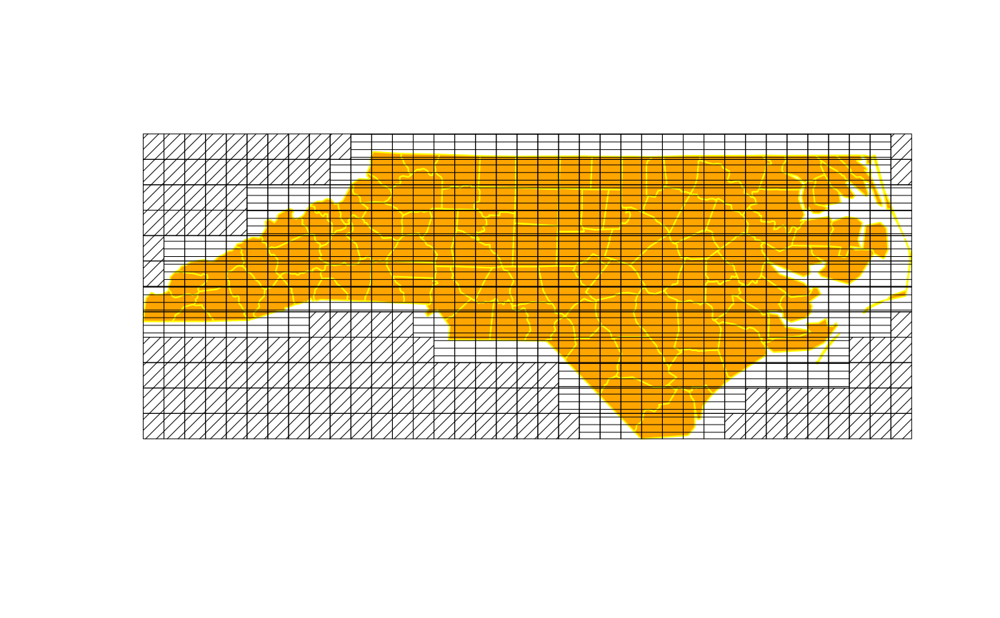

experimental-functions.RdFunctions still under development using the GEOS STRtree structure to find intersecting object component envelopes (bounding boxes).
gUnarySTRtreeQuery(obj)
gBinarySTRtreeQuery(obj1, obj2)
poly_findInBoxGEOS(spl, as_points=TRUE)Objects inheriting from either SpatialPolygons or SpatialLines, obj2 may also inherit from SpatialPoints
Object that inherits from the SpatialPolygons class
Logical value indicating if the polygon should be treated as points
gUnarySTRtreeQuery and poly_findInBoxGEOS do the same thing, but poly_findInBoxGEOS uses the as_points argument to build the input envelopes from proper geometries. gUnarySTRtreeQuery and gBinarySTRtreeQuery build input envelopes by disregarding topology and reducing the coordinates to a multipoint representation. This permits the tree to be built and queried even when some geometries are invalid. gUnarySTRtreeQuery and poly_findInBoxGEOS return a list of length (n-1) of 1-based indices only for the “greater than i” indices. gBinarySTRtreeQuery returns a list of the length of obj2 with 1-based indices of obj1.
if (require(maptools)) {
xx <- readShapeSpatial(system.file("shapes/fylk-val-ll.shp",
package="maptools")[1], proj4string=CRS("+proj=longlat +datum=WGS84"))
a0 <- gUnarySTRtreeQuery(xx)
a0
nc1 <- readShapePoly(system.file("shapes/sids.shp", package="maptools")[1],
proj4string=CRS("+proj=longlat +datum=NAD27"))
a2 <- gUnarySTRtreeQuery(nc1)
#a3 <- poly_findInBoxGEOS(nc1)
#all.equal(a2, a3)
a2
pl <- slot(nc1, "polygons")[[4]]
a5 <- gUnarySTRtreeQuery(pl)
a5
SG <- Sobj_SpatialGrid(nc1, n=400)$SG
obj1 <- as(as(SG, "SpatialPixels"), "SpatialPolygons")
a4 <- gBinarySTRtreeQuery(nc1, obj1)
plot(nc1, col="orange", border="yellow")
plot(obj1, angle=sapply(a4, is.null)*45, density=20, lwd=0.5, add=TRUE)
set.seed(1)
pts <- spsample(nc1, n=10, type="random")
res <- gBinarySTRtreeQuery(nc1, pts)
}
#> Loading required package: maptools
#> Warning: shapelib support is provided by GDAL through the sf and terra packages among others
#> Warning: shapelib support is provided by GDAL through the sf and terra paackages among others
#> Warning: shapelib support is provided by GDAL through the sf and terra packages among others
#> Warning: shapelib support is provided by GDAL through the sf and terra packages among others
